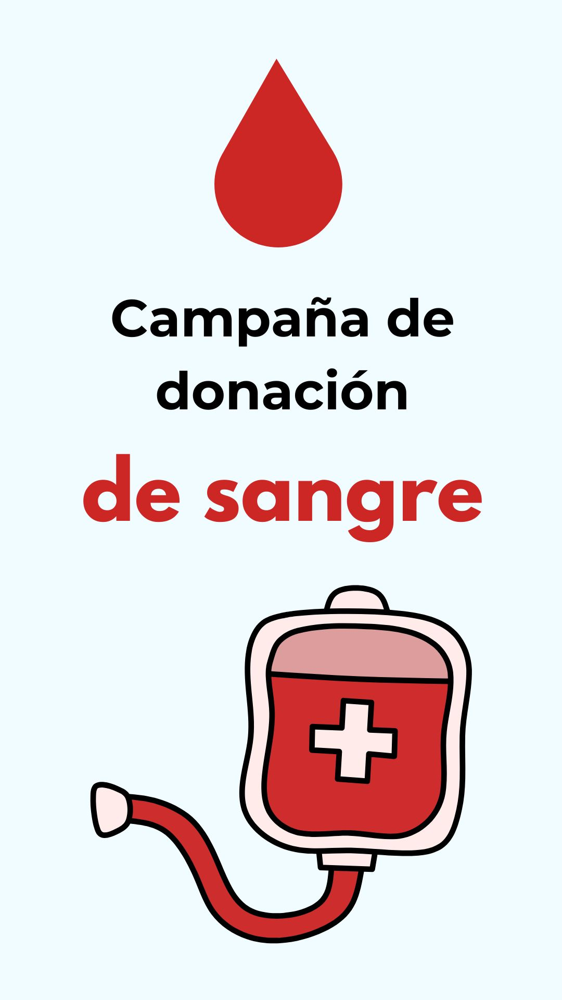

Campaña de donación de sangre con el Hospital Italiano
Por Galo Laborde de 5°A

Los alumnos de 5°A se asociaron con el Hospital Italiano para hacer una campaña de donación de sangre, los chicos antes de la campaña tuvieron una capacitación para luego llevar a cabo el proyecto. Para esto tuvieron que separarse en grupos donde cada uno hacía diferentes tareas, algunos se encargaron de conseguir alimentos, crear el formulario para que se registren los donantes, armar los volantes, salir a repartir los volantes por el barrio. Llegado el 18 de junio se prepararon de la siguiente manera.
En puerta dos alumnos los cuales verificaron la identidad de las personas, tres alumnos en el buffet los cuales brindaban alimentos y bebidas después que donaran y el último grupo de asistencia los cuales eran los encargados de dar los souvenirs y se encargaban de sacar fotos, durante el día iban rotando los turnos así todos podían participar. Finalizada la jornada se registraron 27 donadores exitosos.